| 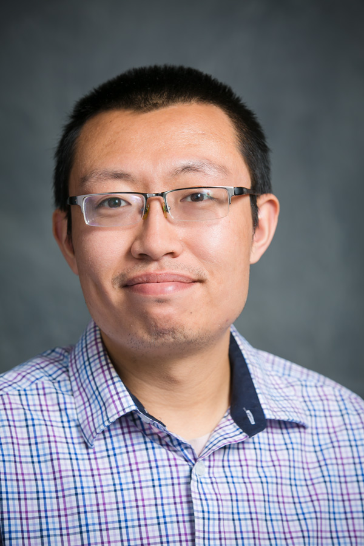 | Fellowship by the Chinese Scholarship Council Visiting graduate student at CHESS, summer 2007 - summer 2008 Projects: - developing sample environments - developing the use x-ray microbeams at D-line - programming GUIs for data analysis and indexing Ph. D. in Materials Science, University of Science and Technology of China (USTC) '09 |
| 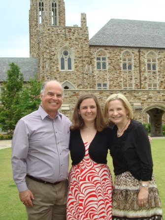 |
Research Experience for Undergraduates (REU) program at CLASSE REU student, summer 2011: Project: Exploring deposition methods of aromatic molecules on glass substrates B. A. in Physics, Rhodes College 2012 |
| 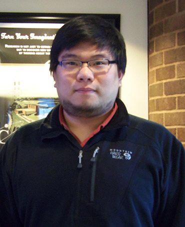 |
Independent study: a high-current analog temperature controller for Peltier heaters Master of Engineering Mai '14 Temporary Technician June-September 2014: design and development of a knife coater and slot-die coaters for use at D1 |
| 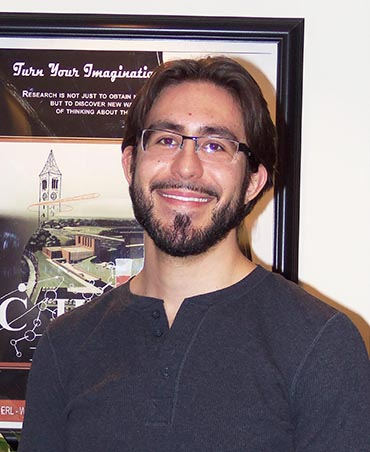 |
MEng Design Project: design a solvent vapor control system Independent Study: build a solvent vapor control system CHESS student June-December 2014: Labview programming for temperature controllers and slot-die coating Master of Engineering December '14 |
| 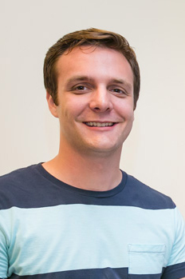 |
MEng Design project: monitoring the adsorption of nanoparticles on functionalized surfaces using a quartz crystal microbalance (QCM-D) Independent Study: adsorption of gold nanoparticles with DNA ligands as a function of salt concentration Masters of Engineering December '14 |
| 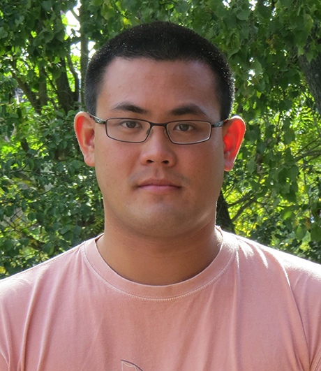 |
Independent study: adsorption of proteins (BSA, ConA) on APTES-functionalized and succinylated surfaces using QCM-D Masters of Engineering May '15 |
| 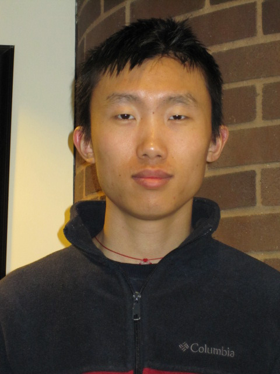 |
Design Project: Programming and testing of the vapor pressure control system built be V. Rosa Masters of Engineering May '15 |
| 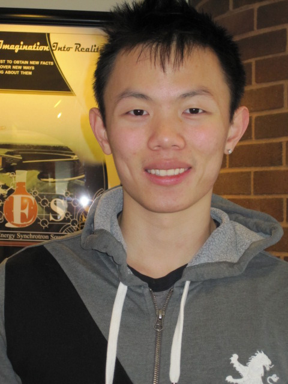 |
Design Project: Adsorption of streptavidin and horseradish peroxidase on biotin-functionalized surface using QCM-D and comparison with fluorescence methods Masters of Engineering May '15 |
| 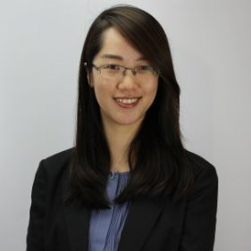 |
Independent study: Synthesis and adsorption of iron oxide nanoparticles Masters of Engineering May '16 Lab Manager at the CHESS Sample Environment Lab |
| 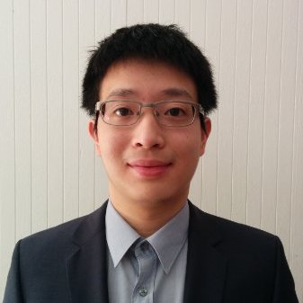 |
MEng Design Project: Coating of iron oxide nanoparticles Masters of Engineering May '16 Masters of Science May '17 |
Design Project: Slot-die coating organic dyes and testing as OFETs Masters of Engineering May '16 Lab Manager at the CHESS Sample Environment Lab |
| 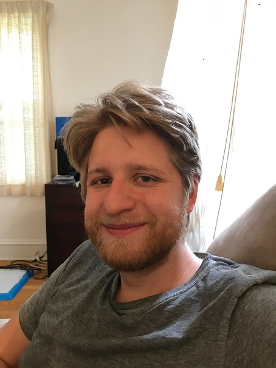 |
MEng Design Project: Turbulent jet mixer for the study of fast anion exchange reactions of nanoparticles |
| 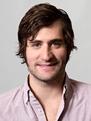 |
CHESS Visiting Scientist and Lab Manager at the CHESS Sample Environment Lab Project: Multilayers of single-stranded DNA-coated gold nanoparticles |
| 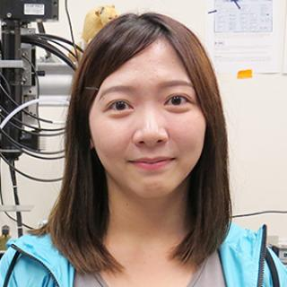 |
Design Project: Adsorption of PbS nanoparticles on functionalized surfaces. Masters of Engineering May '18 |
| 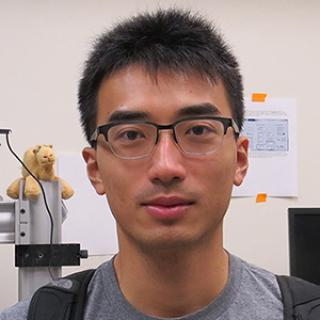 |
Design Project: Solvent vapor annealing studies of novel block copolymers. Masters of Engineering May'18 |